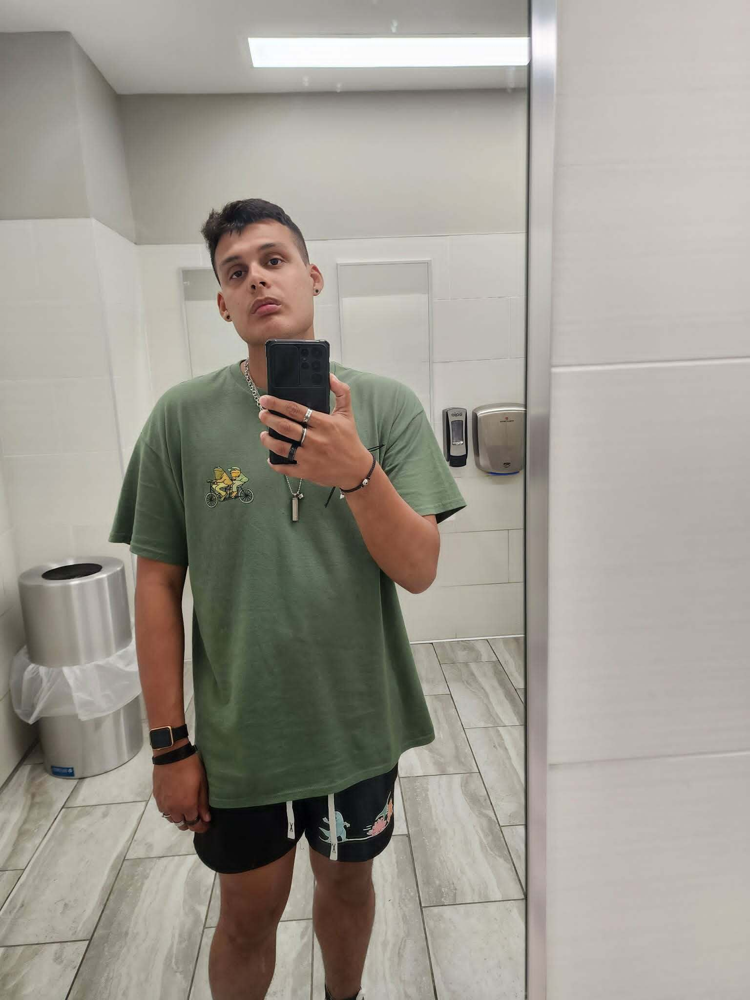

My name is Abdiel Olivares, and I am a dedicated student, Army service member, and passionate graphic designer. My journey has been far from linear, but every step has shaped the person and professional I am today.
I enlisted in the United States Army in 2023, motivated by the desire to challenge myself, seek meaningful direction, and build a stronger foundation for my future. Serving as a Cadet has strengthened my discipline, leadership skills, and work ethic. The Army has played a major role in my personal and professional growth, teaching me how to adapt, overcome adversity, and pursue excellence.
I began my college studies in 2018, but like many people still trying to discover their path, I stepped away in 2020. I spent the next few years working a dead end job an experience that ultimately motivated me to make a change and build something better for myself. After joining the Army, I returned to la Interamerican University. Today, I am fully committed to completing my education and strengthening both my academic and military career.
Outside of the military, I am a deeply passionate graphic designer. I specialize in visual storytelling, branding, digital art, and creative problem-solving. Design has always been more than a skill for me it is the way I express myself, connect with others, and build new ideas from the ground up. Every project I create reflects my dedication, my growth, and my ambition to continue evolving as an artist.